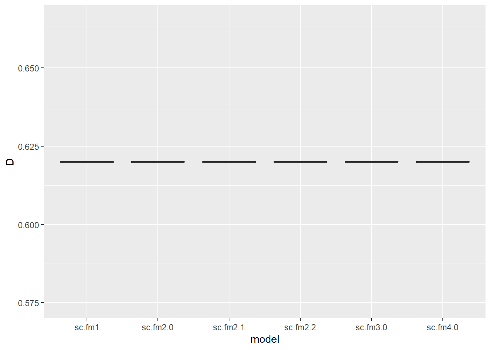
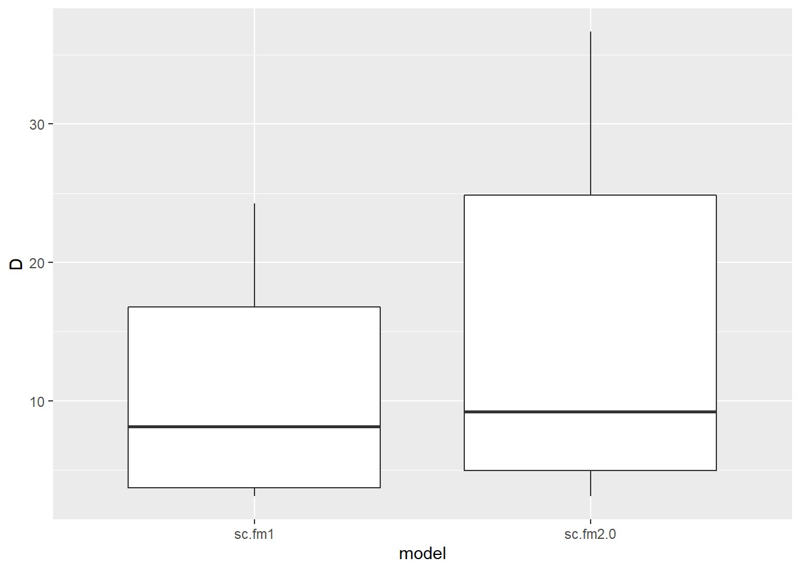
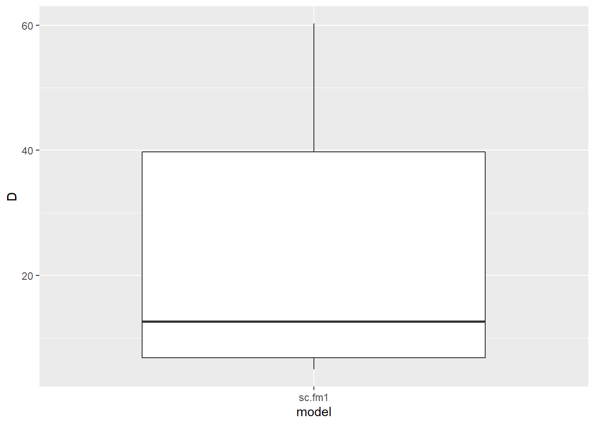
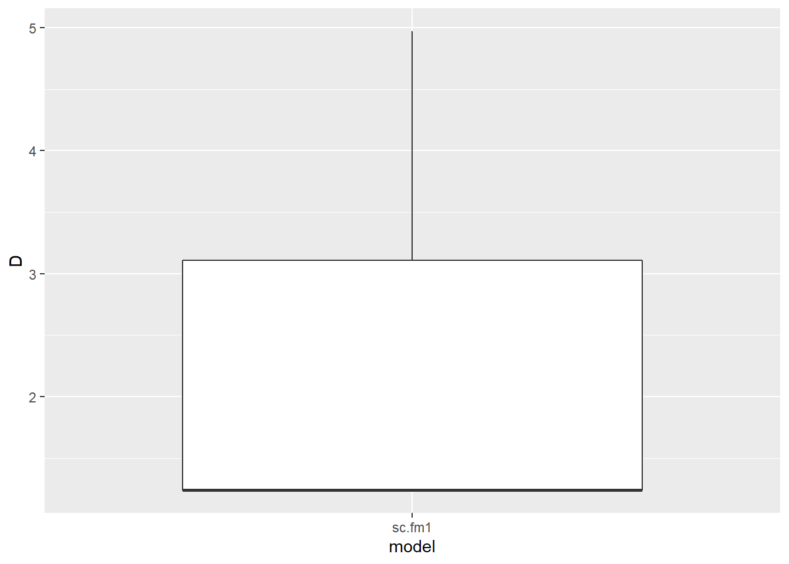
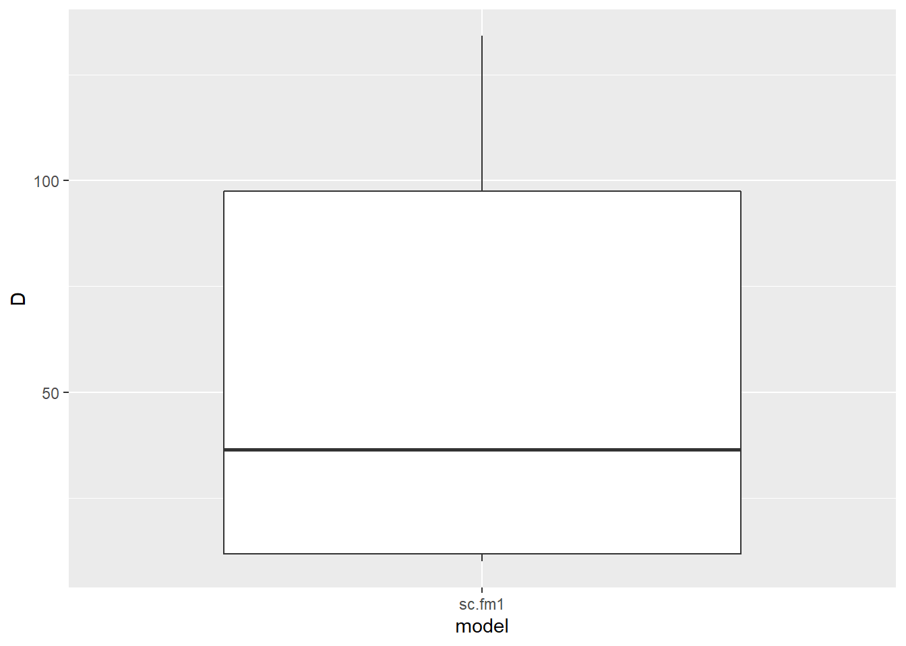

Models evaluated:
| model | description |
|---|---|
| sc.fm1 | dot model |
| sc.fm2.0 | lure |
| sc.fm2.1 | snow |
| sc.fm2.2 | temp |
| sc.fm2.3 | pass |
| sc.fm3.0 | lure + snow |
| sc.fm3.1 | lure + pass |
| sc.fm4.0 | lure + snow + temp |
| sc.fm4.2 | lure + snow + temp + pass |
| sc.fm5.0 | lure + snow + temp + pass + temp * snow |
| sc.fm5.1 | lure + snow + temp + pass + lure * snow |
model metadata:
| survey | n_sites | detections | rep_period | model_aggragate_reps | state_buffer | iterations | burnin | thin | sigma.mean | sigma.sd |
|---|---|---|---|---|---|---|---|---|---|---|
| Mono creek | 19 | 20 | 7 days | 300 | 2.5 | 350000 | 20000 | 20 | 2.3 | 0.268 |
global models:
| model | covs | bayes_p_val | bayes_factor | revMCMC_constrained | revMCMC_unconstrained | revMCMC_noInteractions |
|---|---|---|---|---|---|---|
| sc.fm5.0 | lure | 0.06431 | err | 0.1397 | 0.1730303 | 0.3136970 |
| sc.fm5.0 | snow | 0 | err | 0.84861 | 0.8772727 | 0.9225455 |
| sc.fm5.0 | temp | 0.11162 | err | 0.17539 | 0.2658182 | 0.4783030 |
| sc.fm5.0 | pass | 0.37755 | err | 0.01297 | 0.5502424 | 0.3532727 |
| sc.fm5.0 | temp*snow | 0.27323 | err | 0.01352 | 0.1116970 | NA |
| sc.fm5.1 | lure | 0.11902 | err | 0.1397 | 0.1730303 | 0.3136970 |
| sc.fm5.1 | snow | 0.15608 | err | 0.84861 | 0.8772727 | 0.9225455 |
| sc.fm5.1 | temp | 0.02731 | err | 0.17539 | 0.2658182 | 0.4783030 |
| sc.fm5.1 | pass | 0.39045 | err | 0.01297 | 0.5502424 | 0.3532727 |
| sc.fm5.1 | lure*snow | 0.78434 | err | 0.01673 | 0.0319394 | NA |
single covariate models:
| model | covs | bayes_p_val | bayes_factor | revMCMC_constrained | revMCMC_unconstrained | revMCMC_noInteractions |
|---|---|---|---|---|---|---|
| sc.fm2.0 | lure | 0.00749 | err | 0.1397 | 0.1730303 | 0.3136970 |
| sc.fm2.1 | snow | 0 | err | 0.84861 | 0.8772727 | 0.9225455 |
| sc.fm2.2 | temp | 0 | err | 0.17539 | 0.2658182 | 0.4783030 |
| sc.fm2.3 | pass | 0.37121 | err | 0.01297 | 0.5502424 | 0.3532727 |
All models: Covariates with p values below .11 (bayesian p, probability covariate is not null)
| model | covs | bayes_p_val | bayes_factor | revMCMC_constrained | revMCMC_unconstrained | revMCMC_noInteractions |
|---|---|---|---|---|---|---|
| sc.fm2.1 | snow | 0 | err | 0.84861 | 0.8772727 | 0.9225455 |
| sc.fm2.2 | temp | 0 | err | 0.17539 | 0.2658182 | 0.4783030 |
| sc.fm3.0 | snow | 0 | err | 0.84861 | 0.8772727 | 0.9225455 |
| sc.fm5.0 | snow | 0 | err | 0.84861 | 0.8772727 | 0.9225455 |
| sc.fm4.2 | snow | 0.00643 | err | 0.84861 | 0.8772727 | 0.9225455 |
| sc.fm2.0 | lure | 0.00749 | err | 0.1397 | 0.1730303 | 0.3136970 |
| sc.fm3.1 | lure | 0.00801 | err | 0.1397 | 0.1730303 | 0.3136970 |
| sc.fm4.0 | snow | 0.00854 | err | 0.84861 | 0.8772727 | 0.9225455 |
| sc.fm3.0 | lure | 0.01492 | err | 0.1397 | 0.1730303 | 0.3136970 |
| sc.fm4.0 | lure | 0.01939 | err | 0.1397 | 0.1730303 | 0.3136970 |
| sc.fm4.0 | temp | 0.02368 | err | 0.17539 | 0.2658182 | 0.4783030 |
| sc.fm4.2 | lure | 0.02514 | err | 0.1397 | 0.1730303 | 0.3136970 |
| sc.fm5.1 | temp | 0.02731 | err | 0.17539 | 0.2658182 | 0.4783030 |
| sc.fm4.2 | temp | 0.03273 | err | 0.17539 | 0.2658182 | 0.4783030 |
| sc.fm5.0 | lure | 0.06431 | err | 0.1397 | 0.1730303 | 0.3136970 |
parameter support:
| level | support | covariates |
|---|---|---|
| good | pval and rev MCMC | snow |
| moderate | pval or rev MCMC | lure - temp |
| poor | neither | pass - snow*temp - lure*snow |
models with significant covariates:
waic:
| model | description | WAIC |
|---|---|---|
| sc.fm4.0 | lure + snow + temp | 116.2644 |
| sc.fm3.0 | lure + snow | 122.2659 |
| sc.fm2.1 | snow | 128.4427 |
| sc.fm2.2 | temp | 131.5311 |
| sc.fm2.0 | lure | 138.6216 |
| sc.fm1 | dot model | 143.7446 |
Density per 100km, significant models:
## Warning: The `x` argument of `as_tibble.matrix()` must have column names if `.name_repair` is omitted as of tibble 2.0.0.
## Using compatibility `.name_repair`.
## This warning is displayed once every 8 hours.
## Call `lifecycle::last_warnings()` to see where this warning was generated.## Warning: NAs introduced by coercion## Warning: Removed 6 rows containing non-finite values (stat_boxplot).
top models density per 100sq km, significant covariates:
| species | model | covs | n_effective | mode | hdi_89pct_lower | hdi_89pct_upper |
|---|---|---|---|---|---|---|
| AmericanBlackBear | sc.fm4.0 | D | 10856 | err | 0.62 | 0.62 |
| AmericanBlackBear | sc.fm4.0 | lure | 14828 | -1.64 | -2.80 | -0.65 |
| AmericanBlackBear | sc.fm4.0 | snow | 12240 | -1.291 | -2.81 | -0.53 |
| AmericanBlackBear | sc.fm4.0 | temp | 15342 | 0.822 | 0.35 | 1.40 |
notes:
err in mode due to flat posterior distribution, equal to hdi, flat distribution may indicate convergance problem, the model does not seem to like black bear detections, ?? hibernation, im/emigration.. ??
model metadata:
| survey | n_sites | detections | rep_period | model_aggragate_reps | state_buffer | iterations | burnin | thin | sigma.mean | sigma.sd |
|---|---|---|---|---|---|---|---|---|---|---|
| Mono creek | 19 | 34 | 7 days | 300 | 2.5 | 350000 | 20000 | 20 | 0.765 | 0.13 |
global models:
| model | covs | bayes_p_val | bayes_factor | revMCMC_constrained | revMCMC_unconstrained | revMCMC_noInteractions |
|---|---|---|---|---|---|---|
| sc.fm5.0 | lure | 0 | 263.258 | 0.69939 | 0.7049697 | 0.7777576 |
| sc.fm5.0 | snow | 0.01666 | 5.477 | 0.00497 | 0.0049697 | 0.0080000 |
| sc.fm5.0 | temp | 0.92483 | 0.096 | 0.00073 | 0.0006061 | 0.0010909 |
| sc.fm5.0 | pass | 0.14477 | 1.340 | 6e-05 | 0.0156364 | 0.0000000 |
| sc.fm5.0 | temp*snow | 0.05006 | 2.854 | 0 | 0.0018182 | NA |
| sc.fm5.1 | lure | 0 | 228.606 | 0.69939 | 0.7049697 | 0.7777576 |
| sc.fm5.1 | snow | 0.18703 | 1.039 | 0.00497 | 0.0049697 | 0.0080000 |
| sc.fm5.1 | temp | 0.84899 | 0.080 | 0.00073 | 0.0006061 | 0.0010909 |
| sc.fm5.1 | pass | 0.15409 | 1.167 | 6e-05 | 0.0156364 | 0.0000000 |
| sc.fm5.1 | lure*snow | 0.71824 | 0.290 | 0.00079 | 0.0013333 | NA |
single covariate models:
| model | covs | bayes_p_val | bayes_factor | revMCMC_constrained | revMCMC_unconstrained | revMCMC_noInteractions |
|---|---|---|---|---|---|---|
| sc.fm2.0 | lure | 0 | 135.886 | 0.69939 | 0.7049697 | 0.7777576 |
| sc.fm2.1 | snow | 0.13377 | 0.701 | 0.00497 | 0.0049697 | 0.0080000 |
| sc.fm2.2 | temp | 0.24714 | 0.218 | 0.00073 | 0.0006061 | 0.0010909 |
| sc.fm2.3 | pass | 0.17929 | 1.101 | 6e-05 | 0.0156364 | 0.0000000 |
All models: Covariates with p values below .11 (bayesian p, probability covariate is not null)
| model | covs | bayes_p_val | bayes_factor | revMCMC_constrained | revMCMC_unconstrained | revMCMC_noInteractions |
|---|---|---|---|---|---|---|
| sc.fm2.0 | lure | 0 | 135.886 | 0.69939 | 0.7049697 | 0.7777576 |
| sc.fm3.0 | lure | 0 | 194.155 | 0.69939 | 0.7049697 | 0.7777576 |
| sc.fm3.1 | lure | 0 | 452.635 | 0.69939 | 0.7049697 | 0.7777576 |
| sc.fm5.0 | lure | 0 | 263.258 | 0.69939 | 0.7049697 | 0.7777576 |
| sc.fm5.1 | lure | 0 | 228.606 | 0.69939 | 0.7049697 | 0.7777576 |
| sc.fm4.2 | lure | 0.00068 | 72.705 | 0.69939 | 0.7049697 | 0.7777576 |
| sc.fm4.0 | lure | 0.00177 | 63.548 | 0.69939 | 0.7049697 | 0.7777576 |
| sc.fm5.0 | snow | 0.01666 | 5.477 | 0.00497 | 0.0049697 | 0.0080000 |
| sc.fm5.0 | temp*snow | 0.05006 | 2.854 | 0 | 0.0018182 | NA |
parameter support:
| level | support | covariates |
|---|---|---|
| good | pval and rev MCMC | lure |
| moderate | pval or rev MCMC | |
| poor | neither | snow - temp - pass - snow*temp - lure*snow |
models with significant covariates:
waic:
| model | description | WAIC |
|---|---|---|
| sc.fm2.0 | lure | 242.0755 |
| sc.fm1 | dot model | 255.6601 |
Density per 100km, significant models:

top models density per 100sq km, significant covariates:
| species | model | covs | n_effective | mode | hdi_89pct_lower | hdi_89pct_upper |
|---|---|---|---|---|---|---|
| AmericanMarten | sc.fm2.0 | D | 913 | 9.234 | 3.11 | 36.65 |
| AmericanMarten | sc.fm2.0 | lure | 16030 | -1.035 | -1.60 | -0.60 |
notes:
temp, snow and snow*temp do not have consistent support
model metadata:
| survey | n_sites | detections | rep_period | model_aggragate_reps | state_buffer | iterations | burnin | thin | sigma.mean | sigma.sd |
|---|---|---|---|---|---|---|---|---|---|---|
| Mono creek | 19 | 50 | 7 days | 300 | 2.5 | 350000 | 20000 | 20 | 0.865 | 0.205 |
global models:
| model | covs | bayes_p_val | bayes_factor | revMCMC_constrained | revMCMC_unconstrained | revMCMC_noInteractions |
|---|---|---|---|---|---|---|
| sc.fm5.0 | lure | 0.99313 | 0.061 | 0.00061 | 0.0006061 | 0.0009091 |
| sc.fm5.0 | snow | 0.75455 | 0.069 | 0.00042 | 0.0004848 | 0.0005455 |
| sc.fm5.0 | temp | 0.16245 | 0.367 | 0.00139 | 0.0012121 | 0.0024242 |
| sc.fm5.0 | pass | 0.9953 | 0.173 | 0 | 0.0006061 | 0.0000000 |
| sc.fm5.0 | temp*snow | 0.31044 | 0.231 | 0 | 0.0004242 | NA |
| sc.fm5.1 | lure | 0.62849 | 0.102 | 0.00061 | 0.0006061 | 0.0009091 |
| sc.fm5.1 | snow | 0.9925 | 0.055 | 0.00042 | 0.0004848 | 0.0005455 |
| sc.fm5.1 | temp | 0.41594 | 0.125 | 0.00139 | 0.0012121 | 0.0024242 |
| sc.fm5.1 | pass | 0.9977 | 0.152 | 0 | 0.0006061 | 0.0000000 |
| sc.fm5.1 | lure*snow | 0.22412 | 0.203 | 0 | 0.0003030 | NA |
single covariate models:
| model | covs | bayes_p_val | bayes_factor | revMCMC_constrained | revMCMC_unconstrained | revMCMC_noInteractions |
|---|---|---|---|---|---|---|
| sc.fm2.0 | lure | 0.58882 | 0.087 | 0.00061 | 0.0006061 | 0.0009091 |
| sc.fm2.1 | snow | 0.77924 | 0.059 | 0.00042 | 0.0004848 | 0.0005455 |
| sc.fm2.2 | temp | 0.15513 | 0.322 | 0.00139 | 0.0012121 | 0.0024242 |
| sc.fm2.3 | pass | 0.99625 | 0.176 | 0 | 0.0006061 | 0.0000000 |
All models: Covariates with p values below .11 (bayesian p, probability covariate is not null)
| model | covs | bayes_p_val | bayes_factor | revMCMC_constrained | revMCMC_unconstrained | revMCMC_noInteractions |
|---|---|---|---|---|---|---|
parameter support:
| level | support | covariates |
|---|---|---|
| good | pval and rev MCMC | |
| moderate | pval or rev MCMC | |
| poor | neither | lure - snow - temp - pass - snow*temp - lure*snow |
models with significant covariates:
waic:
| model | description | WAIC |
|---|---|---|
| sc.fm1 | dot model | 347.3106 |
Density per 100km, significant models:

top models density per 100sq km, significant covariates:
| species | model | covs | n_effective | mode | hdi_89pct_lower | hdi_89pct_upper |
|---|---|---|---|---|---|---|
| Coyote | sc.fm1 | D | 975 | 12.654 | 4.97 | 60.26 |
notes:
no covariate support..
notes:
model did not converge – poor estimates – see model selection for posterior distribution etc.. modeled sigma .16 km, maybe a lack of trap dependence
model metadata:
| survey | n_sites | detections | rep_period | model_aggragate_reps | state_buffer | iterations | burnin | thin | sigma.mean | sigma.sd |
|---|---|---|---|---|---|---|---|---|---|---|
| Mono creek | 19 | 13 | 7 days | 300 | 2.5 | 350000 | 20000 | 20 | 1 | 0.14 |
global models:
| model | covs | bayes_p_val | bayes_factor | revMCMC_constrained | revMCMC_unconstrained | revMCMC_noInteractions |
|---|---|---|---|---|---|---|
| sc.fm5.0 | lure | 0.99886 | 0.177 | 0.00067 | 0.0009091 | 0.0010303 |
| sc.fm5.0 | snow | 0.77684 | 0.147 | 0.00115 | 0.0007879 | 0.0015758 |
| sc.fm5.0 | temp | 0.49985 | 0.272 | 0.00091 | 0.0012727 | 0.0018788 |
| sc.fm5.0 | pass | 0.16329 | 1.957 | 0 | 0.0081212 | 0.0000000 |
| sc.fm5.0 | temp*snow | 0.10624 | 1.511 | 0 | 0.0177576 | NA |
| sc.fm5.1 | lure | 0.98071 | 0.182 | 0.00067 | 0.0009091 | 0.0010303 |
| sc.fm5.1 | snow | 0.63752 | 0.21 | 0.00115 | 0.0007879 | 0.0015758 |
| sc.fm5.1 | temp | 0.33451 | 0.35 | 0.00091 | 0.0012727 | 0.0018788 |
| sc.fm5.1 | pass | 0.2015 | 1.636 | 0 | 0.0081212 | 0.0000000 |
| sc.fm5.1 | lure*snow | 0.62194 | 0.21 | 0 | 0.0021212 | NA |
single covariate models:
| model | covs | bayes_p_val | bayes_factor | revMCMC_constrained | revMCMC_unconstrained | revMCMC_noInteractions |
|---|---|---|---|---|---|---|
| sc.fm2.0 | lure | 0.92847 | err | 0.00067 | 0.0009091 | 0.0010303 |
| sc.fm2.1 | snow | 0.33877 | err | 0.00115 | 0.0007879 | 0.0015758 |
| sc.fm2.2 | temp | 0.43043 | err | 0.00091 | 0.0012727 | 0.0018788 |
| sc.fm2.3 | pass | 0.17444 | 1.823 | 0 | 0.0081212 | 0.0000000 |
All models: Covariates with p values below .11 (bayesian p, probability covariate is not null)
| model | covs | bayes_p_val | bayes_factor | revMCMC_constrained | revMCMC_unconstrained | revMCMC_noInteractions |
|---|---|---|---|---|---|---|
| sc.fm5.0 | temp*snow | 0.10624 | 1.511 | 0 | 0.0177576 | NA |
parameter support:
| level | support | covariates |
|---|---|---|
| good | pval and rev MCMC | |
| moderate | pval or rev MCMC | |
| poor | neither | lure - snow - temp - pass - snow*temp - lure*snow |
models with significant covariates:
waic:
| model | description | WAIC |
|---|---|---|
| sc.fm1 | dot model | 104.9693 |
Density per 100km, significant models:

top models density per 100sq km, significant covariates:
| species | model | covs | n_effective | mode | hdi_89pct_lower | hdi_89pct_upper |
|---|---|---|---|---|---|---|
| RedFox | sc.fm1 | D | 3557 | 1.242 | 1.24 | 4.97 |
notes:
small amount of support for luresnow interaction, could maybe run snow + temp + luresnow and check waic
model metadata:
| survey | n_sites | detections | rep_period | model_aggragate_reps | state_buffer | iterations | burnin | thin | sigma.mean | sigma.sd |
|---|---|---|---|---|---|---|---|---|---|---|
| Mono creek | 19 | 66 | 7 days | 300 | 2.5 | 350000 | 20000 | 20 | 0.322 | 0.094 |
global models:
| model | covs | bayes_p_val | bayes_factor | revMCMC_constrained | revMCMC_unconstrained | revMCMC_noInteractions |
|---|---|---|---|---|---|---|
| sc.fm5.0 | lure | 0.17699 | 0.386 | 0.00897 | 0.0086667 | 0.0121818 |
| sc.fm5.0 | snow | 0.80924 | 0.064 | 0.00048 | 0.0004848 | 0.0005455 |
| sc.fm5.0 | temp | 0.30448 | 0.156 | 0.00497 | 0.0056364 | 0.0063636 |
| sc.fm5.0 | pass | 0.92061 | 0.249 | 0 | 0.0012121 | 0.0000000 |
| sc.fm5.0 | temp*snow | 0.79313 | 0.068 | 0 | 0.0002424 | NA |
| sc.fm5.1 | lure | 0.14569 | 0.563 | 0.00897 | 0.0086667 | 0.0121818 |
| sc.fm5.1 | snow | 0.54805 | 0.142 | 0.00048 | 0.0004848 | 0.0005455 |
| sc.fm5.1 | temp | 0.36511 | 0.142 | 0.00497 | 0.0056364 | 0.0063636 |
| sc.fm5.1 | pass | 0.91253 | 0.284 | 0 | 0.0012121 | 0.0000000 |
| sc.fm5.1 | lure*snow | 0.62168 | 0.149 | 0 | 0.0001818 | NA |
single covariate models:
| model | covs | bayes_p_val | bayes_factor | revMCMC_constrained | revMCMC_unconstrained | revMCMC_noInteractions |
|---|---|---|---|---|---|---|
| sc.fm2.0 | lure | 0.03856 | 1.815 | 0.00897 | 0.0086667 | 0.0121818 |
| sc.fm2.1 | snow | 0.75012 | 0.060 | 0.00048 | 0.0004848 | 0.0005455 |
| sc.fm2.2 | temp | 0.04525 | 1.173 | 0.00497 | 0.0056364 | 0.0063636 |
| sc.fm2.3 | pass | 0.9237 | 0.239 | 0 | 0.0012121 | 0.0000000 |
All models: Covariates with p values below .11 (bayesian p, probability covariate is not null)
| model | covs | bayes_p_val | bayes_factor | revMCMC_constrained | revMCMC_unconstrained | revMCMC_noInteractions |
|---|---|---|---|---|---|---|
| sc.fm3.0 | lure | 0.03294 | 2.393 | 0.00897 | 0.0086667 | 0.0121818 |
| sc.fm2.0 | lure | 0.03856 | 1.815 | 0.00897 | 0.0086667 | 0.0121818 |
| sc.fm2.2 | temp | 0.04525 | 1.173 | 0.00497 | 0.0056364 | 0.0063636 |
| sc.fm3.1 | lure | 0.04563 | 1.589 | 0.00897 | 0.0086667 | 0.0121818 |
parameter support:
| level | support | covariates |
|---|---|---|
| good | pval and rev MCMC | |
| moderate | pval or rev MCMC | |
| poor | neither | lure - snow - temp - pass - snow*temp - lure*snow |
models with significant covariates:
waic:
| model | description | WAIC |
|---|---|---|
| sc.fm1 | dot model | 405.143 |
Density per 100km, significant models:

top models density per 100sq km, significant covariates:
| species | model | covs | n_effective | mode | hdi_89pct_lower | hdi_89pct_upper |
|---|---|---|---|---|---|---|
| WhiteTailedJackrabbit | sc.fm1 | D | 561 | 36.4 | 9.94 | 134.19 |
notes:
poor connvergance.. no covariate support